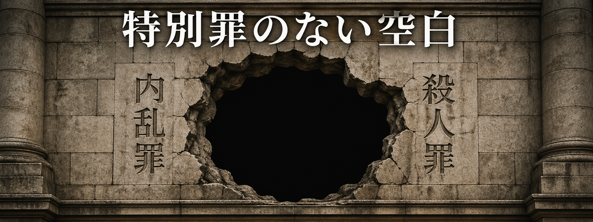

最新記事
ＡＩは「愛情」で同調する——熟議民主主義の静かな解体
Anthropicが実証した「機能的感情」——愛情ベクトルがサイコファンシーを生む。バーク・福田恆存・アーレントを軸に、保守政治が直面する文明論的危機を論じる。

米中首脳会談は「交渉」ではない——相互人質の時代、日本の選択
5月北京会談の本質は「交渉」でなく「共倒れを避けるための休戦管理」だ。中国がレアアース精製の9割超を、米国がドル決済網を握る「相互人質」の均衡——日本はその外に置かれる三重の脆弱性を直視していない。

特別罪のない空白——国家は自らの中枢を守れるか
大統領暗殺未遂から48時間で訴追した米国と、安倍銃撃から4年後も変わらぬ日本の法的空白。警護という前段が破れたとき、後段の言葉を持たない国家の思想的欠缺を問う。